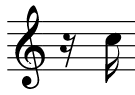
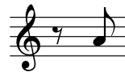
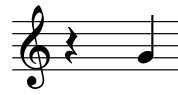
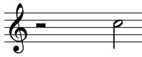
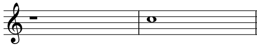

Pauser
Musikk er ikke konstant lyd. For at notene som faktisk spilles skal gi et inntrykk, må man i blandt være stille. Tenk på det slik: Når du snakker, snakker du ikke uten å stoppe, og du snakker heller ikke når andre har noe viktig å si.
Pausene kan ses på som en stille note, og det finnes like mange pauseverdier som det finnes noteverdier. Det vil si at pausene har akkurat samme verdi som vanlige noter, men i stedet for en nydelig trompettone har man litt stillhet.
Her ser du pausene som svarer til noteverdiene du har lest om så langt:

Sekstendelspause.

Åttendelspause.

Fjerdedelspause.

Halvnotepause/Halv takts pause.

Helnotepause/Hel takts pause.